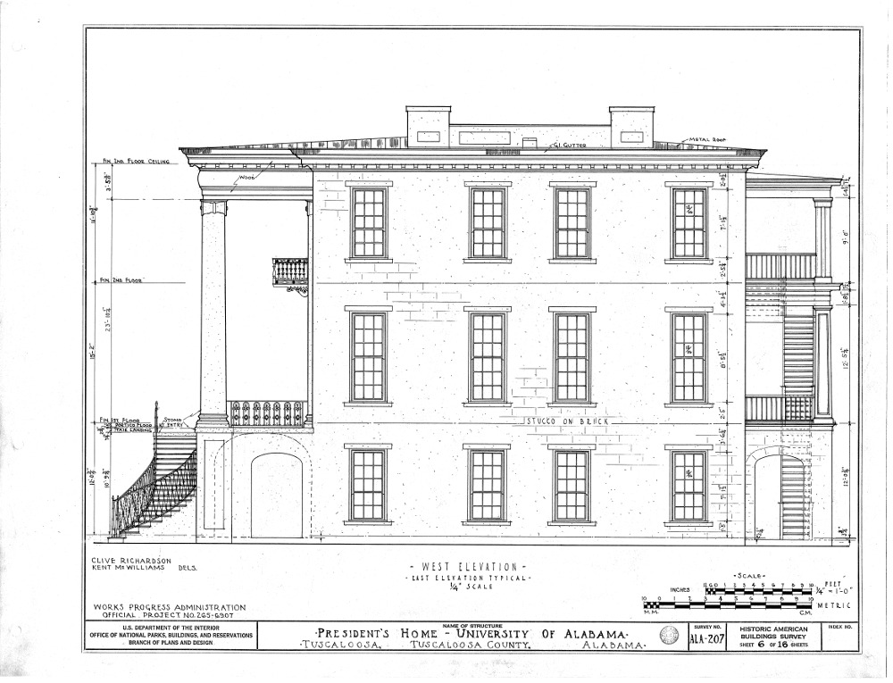

Roadmap
Motivation
This pattern shows how your group can define the scope of their project and make a realistic plan to address it. This pattern provides the backbone of our pattern language. It can be used to find a shared goal.
Context
Peeragogy has both distributed and centralized aspects. The discussants or contributors who collaborate on a project have different points of view and heterogeneous priorities, but they come together in conversations and joint activities.
Forces
Variety: people have different goals and interests in mind.
Clarity: some goals may be quite specific, and some rather vague.
Coherence: only some of these goals will be well-aligned.
Problem
In order to collaborate, people need a way to share current, though incomplete, understanding of the space they are working in, and to nurture relationships with one another and the other elements of this space. At the outset, there may not even be a coherent vision for a project – but a only loose collection of motivations and sentiments. Once the project is up and running, people are likely to pull in different directions.
Solution
Building a guide to the goals, activities, experiments and working methods can help Newcomers and old-timers alike understand their relationship with the project. It may combine features of a manifesto, a syllabus, and an issue tracker. It may be a design pattern or a pattern language [3]. The distinguishing qualities of a project Roadmap are that it should be adaptive to circumstances, and that it should ultimately get us from here to there. By this same token, any given version of the roadmap is seen as fallible. In lieu of widespread participation, the project’s Wrapper should attempt to synthesize an accurate roadmap that is informed by participants’ behavior, and should help moderate in case of conflict. Nevertheless, full consensus is not necessary: different goals, with different heres and theres, can be pursued separately, while maintaining communication.
Rationale
The group evolves from a less-sophisticated to a more-sophisticated manner of operating by using the roadmap. Using the roadmap builds a collective awareness of how things are working in practice. In the Peeragogy project our initial roadmap was a “crowdsourced” outline of the first edition of the Peeragogy Handbook. Later, it took the form of a schedule of meetings following a regular Heartbeat, supplemented by a list of upcoming deadlines. Most recently, our roadmap is expressed in the emergent objectives collected at the end of current paper. We have seen that a list of nice-to-have features created in a top-down fashion is comparatively unlikely to go anywhere! A backlog of tasks and a realistic plan for accomplishing them are vastly different things. An adaptive roadmap is an antidote to Tunnel Vision [1].
Resolution
An emergent roadmap is rooted in real problems and justifiable solutions-in-progress in all their variety and communicates both resolution and follow-through. The process of meshing varied issues with one another requires thought and discussion, and this encourages clarity. The test of coherence is that contributed goals and ideas should be actionable. The ultimate quality-control test is if it worked, i.e., did it come to pass that the task(s) the roadmap was created to achieve ended up being achieved? If all of the issues that the roadmap outlines are not resolved, the roadmap itself should be revised. Without a roadmap, we would never know.
Example 1
The Help link present on every Wikipedia page could be seen as a localized Roadmap for individual user engagement: it tells users what they can do with the site, and gives instructions on how to do it.1 someone who knows what they’re doing, there are around 30 pages listing articles with various kinds of problems, for example articles tagged with style issues, or “orphaned” articles (i.e., articles with no links from other pages in the encyclopedia).2,3,4 In 2010-2011, Wikimedia developed a strategic plan drawing on community input [2]. In 2015, a two-week Community Consultation was carried out; synthesis resulted in “a direction that will guide the decisions for the organization.”5 Community-organized WikiProjects often invite and guide involvement on A specific project.
Example 2
In a future university run in a peer produced manner, a fancy President’s Residence presumably wouldn’t be needed. Leadership would be carried out in a more collaborative and distributed fashion. However, depending on just how distributed things are, it may turn out to be useful for project facilitators to gather at a University Hall. Whereas there is strength in numbers, there is leverage in organization. This is what the Roadmap provides.

President’s Residence, University of Alabama.
What’s Next in the Peeragogy Project
If it becomes clear that something needs to change about the project, that is a clue that we might need to revise our patterns or record a new one. We can use the names of the patterns to tag our upcoming tasks.
References
-
David M. Dikel, David Kane, and James R. Wilson. 2001. Software architecture: Organizational principles and patterns. Pearson Education.
-
Eugene Eric Kim and others. 2011. Wikimedia Strategic Plan: A collaborative vision for the movement through 2015. Wikimedia Foundation.
-
Christian Kohls. 2010. The structure of patterns. Proceedings of the 17th Conference on Pattern Languages of Programs, ACM, 12.